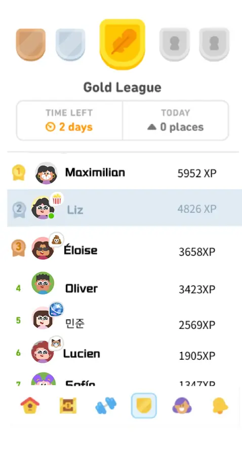
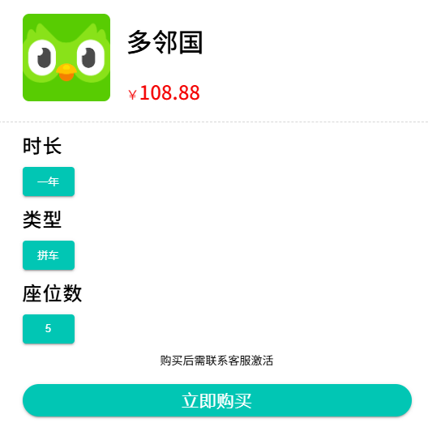
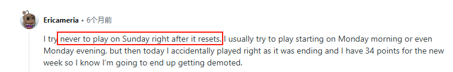

Duolingo Leagues 2025：更快獲勝，輕鬆晉級
學習一門語言並非易事，我們常常會感到無聊和缺乏動力。為了應對這些挑戰，Duolingo推出了一項名為"Duolingo Leagues"的創新功能，讓語言學習變得更有趣、更有競爭力。
正是這個功能重新點燃了我在Duolingo學習的動力，並幫助我打下了更扎實的學習基礎。今天，我想和大家分享一下如何使用這個功能，如何快速晉級，可以獲得哪些獎勵，以及它是如何真正幫助我突破語言學習道路上的障礙的。
Duolingo 中有哪些聯賽？
簡單來說，Duolingo 聯盟是由 30 位不同的用戶 組成的小組，他們一起學習並爭奪排名。與《英雄聯盟》的排名系統類似，Duolingo 也有自己的排名系統。通過完成課程、練習和小遊戲，用戶可以不斷 積累經驗值 (XP)， 並在排行榜上激烈競爭，提升排名，最終晉級到最高級別。
過去幾週，我一直在使用 Duolingo Leagues，下面的圖表展示了我的學習進度。學習三週後，我成功從青銅級晉升到了黃金級。
為了鼓勵用戶在 Duolingo 上花費更多時間，他創建了一個排名系統。每完成一節課，你就能獲得積分，排名越高的人就能晉級到更高的級別。
事實證明，這種方法非常有效，通過"多鄰國聯賽"的設計，顯著提升了多鄰國的用戶參與度和留存率。留存率從12% 提升到了 55% 。 顯然，人們無法抗拒像"我離升級只有 20 點經驗值了"這樣的小目標。
加入 Duolingo 聯盟比你想像的要簡單。大多數用戶註冊帳戶並學習幾節課後，就會自動被分配到一個聯盟小組。一旦你完成了前 10 個單元(主要是基礎詞彙和語法)，Duolingo 就會認為你已經"從初學者模式畢業"，可以參加排名競賽了。
如果你還沒有開始學習語言，別擔心——在 Duolingo 上學習新語言的過程非常簡單。 還在猶豫要不要加入？你可能已經加入了，只是你還沒注意到而已。現在就打開 Duolingo，看看主頁右下角——是不是已經有閃亮的排行榜在等著你了？
Duolingo Leagues 如何運作？
每週一，你會被分配到一個由其他29名用戶組成的小組，開始比賽。你的任務是完成盡可能多的任務(復習詞彙、練習對話等)，以積累經驗值。
如果你是第一次參與，你可能會想："為什麼排行榜上的人 學習的語言和我不一樣 ？" 這其實很正常。Duolingo 的排行榜不會根據語言對用戶進行分組，而是 根據你的學習水平和活躍度來 匹配隊友。換句話說，你越勤奮，你的對手就越勤奮。

Duolingo 有哪些不同的級別？
Duolingo 目前有 10 個聯賽， 按從低到高的順序排列：
- 青銅聯賽 ：這是大家的起點，也是 新手 的保護期。 排名前20的 玩家將有機會晉級。
- 白銀聯賽 ：進入白銀聯賽後，你會發現氣氛開始發生變化。排名靠前的選手已經開始了 "每日三次訓練"， 只有 排名前15的 選手才有資格晉級。
- 黃金聯賽 ：真正的挑戰從這裡 開始 。這裡的用戶通常對語言學習充滿熱情，競爭也更加激烈。只有 排名前十的 玩家才能晉級。
- 藍寶石聯賽 ：是時候開始 制定策略了 。你需要考慮每天什麼時候學習、學習什麼以及如何學習，同時不斷關注排名，確保你的排名不會跌到 第七名 以下。
- 紅寶石聯賽 ：遊戲中期的僵局。這個階段尤其具 有挑戰性 ，因為你的對手越來越強大，僅僅依靠日常的訓練是不夠的。同樣，只有 排名前七的 用戶才能晉級。
- 翡翠聯盟 ：目前，你的表現已 超越全球約 60%的用戶，你可以為自己的成就感到自豪。保持前 7 名 的排名，你將能夠繼續前進。
- 紫晶聯賽 ： 頂尖高手的聚集地 。學習者通常在這個階段擁有更多連勝紀錄，所以你需要付出更多努力才能保持在前 七名 。
- 珍珠聯賽 ：在這個階段，你的競爭對手大多是專業的語言學習者，他們會在 Duolingo 上 花費"大量時間"學習 。 排名前 7 的 選手將晉級。
- 黑曜石聯賽 ：這是終極挑戰前的最後一步。只有 排名前五的 玩家才能繼續晉級，最終達到巔峰。
- 鑽石聯賽 ：這是 最高級別 ，但排名墊底的五名將被降級。 排名前十的 選手將有機會參加鑽石錦標賽的挑戰。
在聯賽中，晉級機會取決於你當前的排名。每個聯賽中排名墊底的五名將被降級。如果你不想降級，可以選擇使用 2000 XP 來保留當前排名。排名中遊的用戶將保持當前排名。
Duolingo 中的最高級別是什麼？
一旦進入 鑽石聯賽 ，就意味著你已經達到了 最高水平 ，並且有機會晉級鑽石錦標賽。
鑽石錦標賽 與多鄰國聯賽排名無關。只有排名最高的選手才有資格參加，這意味著只有鑽石聯賽排名前十的選手才有資格參加。
鑽石錦標賽持續3週，每週包含一個獨立階段。總共分為三個階段：四分之一決賽、半決賽和決賽。目前，鑽石錦標賽僅在iOS和桌面平台上開放。
請注意，鑽石錦標賽並非每週舉行。請留意Duolingo的消息。
Duolingo 聯賽何時結束？
多鄰國聯賽的每一輪比賽持續一整週——從週一到下週一。由於比賽開始時間為格林威治標準時間凌晨 4：00，具體時間會 根據你所在的時區而 有所不同。
無論你身處哪個時區，你的 Duolingo League 都會在週日晚上 10：00 至週一凌晨 1：00 之間的某個時間結束。
上一期聯賽結束後不久，新一期聯賽就會開始。只需完成一節課程即可加入新聯賽。
我第一次接觸Duolingo Leagues的時候，也想過自己能從中獲得什麼。為了進步，每天這麼努力學習 值得 嗎？答案當然是肯定的。為了積累經驗值，你必須勤奮地完成課程，每天反復練習。這種循序漸進的積累實際上能幫助你更牢固地掌握語法和詞彙。
Duolingo 還會在你每次升級時提供 一些小獎勵 ，例如 寶石 。這些寶石可以用來解鎖更難的關卡、購買關卡跳躍、補充生命值等等。
對我來說，最珍貴的不是物質獎勵，而是它給予我不斷進步的 動力 。在排行榜上與他人競爭也促使我繼續努力。
如何在 Duolingo 中獲得更高高級別的聯賽？
我經常在 Reddit 上看到有人質疑 Duolingo 用戶是否為了在聯賽中獲得高 XP 分數而 作弊 。這可以理解——當你看到有人在短短幾個小時內就獲得 數千 XP時，這確實顯得不切實際 。
然而，根據Duolingo的官方聲明，該平台尚未發現任何作弊或分數造假的情況。大多數情況下，這些高分都是由那些投入大量時間學習並採用高效經驗積累策略的用戶獲得的。沒錯，這樣的用戶確實存在。
以下是我親自測試過並發現有效的促銷技巧：
訂閱 Super Duolingo
對於大多數用戶來說，升級到 Super Duolingo 是獲得高 XP 最直接、最便捷的方式。Super Duolingo 每月收費 8.16 美元，通常按年付費，但它提供許多獨家功能，可顯著提升你的學習效率和體驗。
- 無限"心"。 購買 Super Duolingo 後，你將獲得無限"心"，這意味著無論你答錯多少題，都無需觀看廣告或停止遊戲，從而大大提高你的 XP 獲取速度。
- 更多雙倍經驗值提升。 你將獲得更多"雙倍經驗值提升"。這意味著你將始終獲得比免費用戶多兩倍的經驗值。
- 解鎖傳奇挑戰。 "傳奇挑戰"是超級多鄰國會員專屬。單次練習即可獲得 40-50 點經驗值，遠超常規課程的 10-15 點經驗值。這相當於四門常規課程的經驗值。
- 離線練習。 超級用戶還可以離線練習，即使在火車、地鐵或電梯等信號較差的地方也能繼續練習。連接網絡後，累積的經驗值將自動累積，確保你不會錯過任何空閒時間。
2025年了，Super Duolingo 訂閱還值得嗎？如果你認真學習，並且想避免廣告和"心跳"限制，那麼它絕對值得。不過，如果你對價格猶豫不決，不妨看看 環球巴士。
我不太願意每年為一款語言學習應用額外花那麼多錢，所以我嘗試訂閱了環球巴士。它的價格比官方訂閱的價格低了一半多，而且關鍵是你可以升級到自己的帳戶，而且它的使用方式幾乎和官方訂閱完全一樣。
晚加入，贏取更容易
Duolingo 聯賽每週固定時間開始，但關於何時"上網學習"，也有一些不錯的規則。尤其如果你只是想在不受壓力的情況下更上一層樓，那麼你需要了解以下策略。
一開始最好從低級開始。隨著你不斷進步，你會遇到分數越來越高的對手。每次聯賽一開始，我早上就開始學習，結果被分到水平相當的小組，經驗值每天增長1000多，我根本跟不上。
後來看了Reddit上的帖子，也學會了聰明一點，當把開始時間刻意推遲到 週一下午或者晚上的 時候，這顯然容易得多。
它的效果非常好，有一次我週一中午上網上課，我發現我們小組裡沒有多少人在認真地提高他們的 XP，而我只需練習幾節課，就能進入前五名。
參加限時挑戰
如果你總是覺得在普通課程中積累經驗值太慢，不妨試試多鄰國的一項隱藏功能： 限時挑戰。 如果玩得好，不到兩分鐘就能輕鬆獲得超過 100 點經驗值。例如，在"閃電回合"中，兩分鐘完成三個關卡最多可獲得 55 點經驗值 。例如，在"閃電回合"中，兩分鐘完成三個關卡最多可獲得 55 點經驗值，使用 雙倍經驗卡則可獲得 110 點經驗值。
Duolingo 有三個挑戰： "閃電回合"、"瘋狂匹配"和"經驗提升與快速復習" 。這三個限時挑戰在提升你的語言技能方面各有優勢。
- Lightning Round 本質上是一種快速抽認卡練習，迫使你快速回答。
- Match Madness 是一種快速配對練習，可以加深詞彙記憶。
- XP 提升和快速復習： 通過復習以前的知識，在短時間內獲得大量 XP。
不同類型的練習可以幫助你針對目標語言的不同領域，同時提高你的理解速度。
一致性是 Duolingo 聯賽的關鍵
雖然有這些建議，但最重要的仍然是堅持。
Duolingo League 只是一個小小的機制，但它的本質是幫助你讓"日常學習"變得更有趣。每天練習幾分鐘，看著自己的名字在排行榜上慢慢攀升，會給你帶來一絲小小的滿足感，讓你不知不覺地堅持下去。
有時候我會偷懶退出，但第二天打開應用，看到我的隊伍開始了新一輪的排名，我還是忍不住點進去"再學一課"。Duolingo 聯賽就像語言學習的"健身圈"，你不是在別人比，而是在和昨天的自己比。
如何在 Duolingo 上禁用聯賽
無論如何，學習總有不在线的時候。如果你覺得多鄰國聯賽壓力很大，想要停止，那麼很遺憾，目前還沒有辦法。
但 Duolingo 其實為這種情況準備了一條"隱藏的逃生路線"——使用 XP Shield。這是一個"片段保存工具"，你可以使用 2000 XP (相當於幾天的練習時間)來激活。一旦激活，即使你一整週不學習，也不會被聯盟系統自動降級。你可以把它看作是給自己放了個"學習假"。
結論：讓 Duolingo Leagues 成為你的日常動力
多鄰國聯盟不會成為你學習的負擔，而是一個充滿樂趣和智慧的學習機制，讓我們在語言學習的旅程中感受到目標感和成就感。你可以衝刺，也可以劃槳;你可以挑戰自我，或者在沒時間的時候用你的經驗值盾"度假"。
但不變的是，只要你堅持下去，它總會幫助你把"每天學習一點點"的小努力變成你將來可以輕鬆談論的真正技能。
如果你想让整個過程更高效、更有動力，並且不想被廣告打擾或受到紅心數量的限制，那麼升級到 Super Duolingo 絕對值得。不妨看看 環球巴士。他們提供穩定的Super Duolingo共享訂閱服務，價格幾乎是官網的一半，並且支持直接用自己的帳戶升級，簡單便捷。
無論你是剛剛起步的新手，還是準備參加鑽石錦標賽的高級玩家，現在就在環球巴士開始你的 Duolingo 語言練習之旅吧!
常問問題
Duolingo 中最難的聯賽是什麼？
Duolingo 中最難的聯賽是鑽石聯賽，它位於聯賽體系的頂端。排名前三的玩家將晉級鑽石錦標賽，排名後五的玩家將被降級。
當你完成 Duolingo 後會發生什麼？
當你完成一節 Duolingo 課程時，屏幕上會出現一隻慶祝的貓頭鷹，但你的學習之旅並沒有就此結束。你可以繼續復習課程、強化薄弱技能，並解鎖傳奇挑戰來獲得更多經驗值。
你在鑽石聯賽中贏得了什麼？
在鑽石聯賽中，每位冠軍不會獲得實體獎品，但會獲得寶石等珍貴的應用內獎勵，可以用來兌換禮物。這是一種榮譽，一種每個人都努力爭取到的成就感。